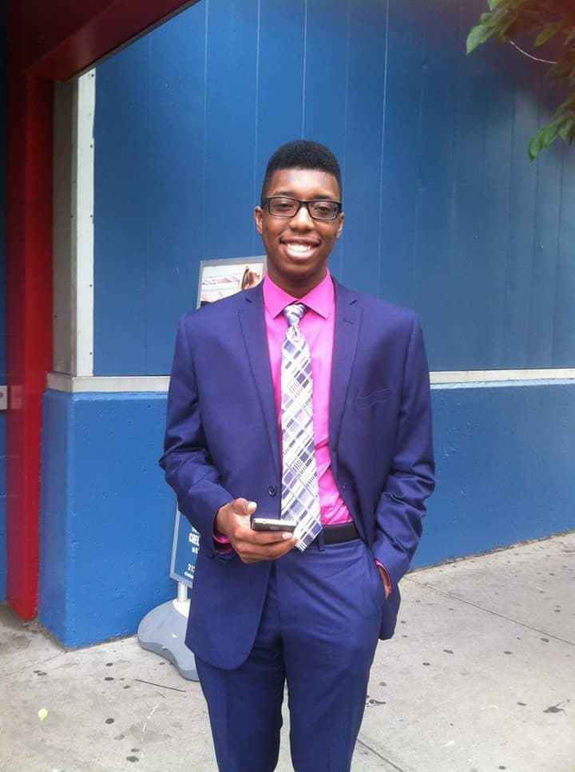

Education: Associate's Degree in Computer Science and Information Security from Queensborough Community College (QCC) (Dec 2020)
Bachelor's Degree in Computer Science and Information Security from John Jay College of Criminal Justice (Expected Dec 2022)
Certifications: Google IT Support Professional Certificate
Programming Language: C++
Awards and Affiliations:
Bachelor's Degree in Computer Science and Information Security from John Jay College of Criminal Justice (Expected Dec 2022)
Certifications: Google IT Support Professional Certificate
Programming Language: C++
Awards and Affiliations:
- CSSI: Online Program Participant, Google
- Phi Theta Kappa, QCC Lambda Sigma Chapter
- Collegiate Science Technology Entry Program (CSTEP)
About Me:
Hi, my name is Rashon Rankin and welcome to my portfolio. I first got my start in software engineering back in high school. During our sophmore year, we had to pick an area of concentration to study for junior and senior year. Originally, media studies was my first choice because I was facinated with animations and how it was done. I got rejected but I got my second choice, which was software engineering. I was horrible at it but it was interesting enough to keep me coming back. Pair that with the amazing teacher I had who never gave up on me (shoutout to Mr. Turner) and I found something I was passionate about and wanted to continue learning more.Why I Joined:
I joined the CUNY Micro-Credential because I was tired of working fast food and I was ready for something greater. Instead of having multiple different small labs here, I decided to do two big projects that combine everything I learned over the last five weeks.Project Descriptions:
The first project I did was based on the game Apex Legends. I showcased my three favorite legends and did some cool things with the CSS. I used pictures and character information from the official game, so all credits for these go to the artists, writers, developers, publishers, etc. The second project is a card game based on I Declare War. I went with a minimalist style for the CSS because I wanted the focus to be on the JavaScript and how the game handles.Connect with me here:


Fun Facts:
- Born in Brooklyn but raised in Queens
- Favorite Sport: Ultimate Frisbee
- Favorite Movie: Rush Hour 2
- Favorite Game: Red Dead Redemption
- Favorite Color: Purple/Pink